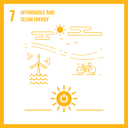

Dr. Saravanakumar Gurusamy
Associate Professor, Department of Electrical & Electronics Technology
FDRE Technical and Vocational Training Institute (FTI), Addis Ababa, Ethiopia
Inspiring and motivating young technical minds through research for the betterment and advancement of humanity.
About
Dr. Saravanakumar Gurusamy is an academic and researcher in instrumentation and control engineering. Born in Seithur, Tamil Nadu, India, he holds a B.E. in Electronics and Instrumentation Engineering, an M.Tech in Control and Instrumentation Engineering, and a Ph.D. on metaheuristic algorithms for nonlinear system identification and multivariable PID controller tuning.
He began his career as a Lecturer at Lakshmi Ammal Polytechnic College, then served as Assistant Professor at Kalasalingam Academy of Research and Education (KARE), as Lecturer at the University of Gondar, and since 2019 as Associate Professor at the FDRE TVT Institute (FTI) in Addis Ababa.
He has guided student teams to success in international competitions such as AfRoboCup, and publishes in journals and conferences on control systems, robotics and intelligent systems. He is a Senior Member of IEEE, a member of ISTE, and serves as Secretary of the IEEE Ethiopia Subsection.
Research interests
Publications
30 selected works (2012–2023). For the full, up-to-date list see Google Scholar.
2023
- Journal
Prediction of Flank Wear during Turning of EN8 Steel with Cutting Force Signals Using a Deep Learning Approach
SK Thangarasu, T Mohanraj, K Devendran, M Rajalakshmi, Subrata Chowdhury, Saravanakumar Gurusamy, et al.Mathematical Problems in Engineering, vol. 2023
- Journal
Tikhonov Regularization and Perturbation-Level Tuning for the CNM in Pharmacokinetics
Luong Thi Theu, Tran Quang-Huy, Tran Duc-Tan, Bhisham Sharma, Subrata Chowdhury, Karthik Chandran, Saravanakumar GurusamyIEEE Access, vol. 11, pp. 30057–30068
2022
- Book chapter
Embedded Remote Condition Monitoring System for Industrial Machinery
Saravanakumar Gurusamy, Mesay Mengistie, Abraham Simon Kangi, K Asan Mohideen, D Ganesha PerumalRecent Advances in Materials and Modern Manufacturing: Select Proceedings of ICAMMM 2021, pp. 577–589
- Article
Machine Learning Approach on Time Series for PV-Solar Energy
S Sivakumar, B Neeraja, M Jamuna Rani, Harishchander Anandaram, S Ramya, Girish Padhan, Saravanakumar Gurusamy
- Journal
Parameter evaluation of a nonlinear Muskingum model using a constrained self-adaptive differential evolution algorithm
Kattuva Mohaideen Abdul Kadhar, Narayanan Natarajan, Mangottiri Vasudevan, Saravanakumar GurusamyWater Practice & Technology, vol. 17(11), pp. 2396–2407
2021
- Journal
2D nanomaterial-based hybrid structured (Au-WSe 2-PtSe 2-BP) surface plasmon resonance (SPR) sensor with improved performance
Md Mahabubur Rahman, Lway Faisal Abdulrazak, Mominul Ahsan, Md Abdul Based, Md Masud Rana, Md Shamim Anower, Khaleda Akter Rikta, Julfikar Haider, Saravanakumar GurusamyIEEE Access, vol. 10, pp. 689–698
- Journal
A hybrid personalized scientific paper recommendation approach integrating public contextual metadata
Nazmus Sakib, Rodina Binti Ahmad, Mominul Ahsan, Md Abdul Based, Khalid Haruna, Julfikar Haider, Saravanakumar GurusamyIEEE Access, vol. 9, pp. 83080–83091
- Journal
A novel method for multivariant pneumonia classification based on hybrid CNN-PCA based feature extraction using extreme learning machine with CXR images
Md Nahiduzzaman, Md Omaer Faruq Goni, Md Shamim Anower, Md Robiul Islam, Mominul Ahsan, Julfikar Haider, Saravanakumar Gurusamy, Rakibul Hassan, Md Rakibul IslamIEEE Access, vol. 9, pp. 147512–147526
- Article
Current-Fed Bidirectional DC-DC Converter Topology for Wireless Charging System Electrical Vehicle Applications
Partha Sarathi Subudhi, M Thilagaraj, CS Sundar Ganesh, S Diwakaran, P Naveen, Saravanakumar Gurusamy, M Pallikonda Rajasekaranvol. 24, pp. 25
- Journal
Estimating the survival of aqua fauna by image analysis techniques from the video sequences of pond aquaculture
Suryasankar Ramalakshmi Palani, Devaraj Durairaj, Kannapiran Balasubramaniyan, Saravanakumar GurusamyAgroLife Scientific Journal, vol. 10(1), pp. 227–235
- Journal
Eye movement signal classification for developing human-computer interface using electrooculogram
M Thilagaraj, B Dwarakanath, S Ramkumar, K Karthikeyan, A Prabhu, Gurusamy Saravanakumar, M Pallikonda Rajasekaran, N ArunkumarJournal of Healthcare Engineering, vol. 2021
- Journal
Photonic crystal fiber based biosensor for pseudomonas bacteria detection: A simulation study
Nusrat Jahan, Md M Rahman, Mominul Ahsan, Md Abdul Based, Md Masud Rana, Saravanakumar Gurusamy, Julfikar HaiderIEEE Access, vol. 9, pp. 42206–42215
2020
- Journal
Modified cascade controller design for unstable processes with large dead time
Karthik Chandran, Rajalakshmi Murugesan, Saravanakumar Gurusamy, K Asan Mohideen, Sanjeevi Pandiyan, Anand Nayyar, Mohamed Abouhawwash, Yunyoung NamIEEE Access, vol. 8, pp. 157022–157036
2019
- Journal
Environmental Condition Monitoring System of Textile Industry for Sustainable Development Goal
G Saravanakumar, CV Baalachandar, K Mohaideen Abdul KadharInternational Journal of Innovative Technology and Exploring Engineering (IJITEE), vol. 9(2S2), pp. 986–991
- Conference
Life-time maximization of wireless sensor network using jaya algorithm
C Jency, Saravanakumar Gurusamy, Abdul Kadher K Mohaideen2019 IEEE International Conference on Clean Energy and Energy Efficient Electronics Circuit for Sustainable Development (INCCES), pp. 1–6
2018
- Conference
Adaptive controller for networked control systems subjected to random communication delays
Seshadhri Srinivasan, G Saravanakumar, B Subathra, N Sundarajan, Ülle Kotta, Srini Ramasamy, Valentina Emilia BalasSoft Computing Applications: Proceedings of the 7th International Workshop Soft Computing Applications (SOFA 2016), Volume 1 7, pp. 78–94
- Journal
Path-planning in autonomous electric vehicle using nonlinear state estimation and behaviour-based controllers
B Subathra, G Saravanakumar, K Ramkumar, Seshadhri Srinivasan, N MuthukumarInternational Journal of Vehicle Systems Modelling and Testing, vol. 12(3/4), pp. 304
2016
- Journal
Extended Kalman filter based path-planning algorithm for autonomous vehicles with I2V communication
D Ganesha Perumal, B Subathra, G Saravanakumar, Seshadhri SrinivasanIFAC-PapersOnLine, vol. 49(1), pp. 652–657
- Journal
Lagrangian-based state transition algorithm for tuning multivariable decentralised controller
G Saravanakumar, K Valarmathi, M Willjuice Iruthayarajan, Seshadhri SrinivasanInternational Journal of Advanced Intelligence Paradigms, vol. 8(3), pp. 303–317
- Journal
MILP based autonomous vehicle path-planning controller for unknown environments with dynamic obstacles
D Ganesha Perumal, Seshadhri Srinivasan, B Subathra, G Saravanakumar, Ramakalyan AyyagariInternational Journal of Heavy Vehicle Systems, vol. 23(4), pp. 350–369
2015
- Journal
An Approach for Short-Term Load Forecasting Using RBFNN in the Smart Grid
Satheesh Kumar, Saravanakumar Gurusamy, B Subathra, Seshadhri SrinivasanInternational Journal of Control Theory and Applications, vol. 8(5), pp. 2169–2177
- Conference
Modelling time-varying delays in networked automation systems with heterogeneous networks using machine learning techniques
Seshadhri Srinivasan, Furio Buonopane, G Saravanakumar, B Subathra, Srini Ramaswamy2015 IEEE international conference on automation science and engineering (case), pp. 362–368
- Conference
On simulating processor schedules and network protocols within CPS using TrueTime
Sreram Balasubramaniyan, B Subathra, RC Hemesh, Saravanakumar Gurusamy, Seshadri Srinivasan2015 IEEE International Conference on Computational Intelligence and Computing Research (ICCIC), pp. 1–6
- Conference
State Transition Algorithm (STA) based tuning of integer and fractional-order PID controller for benchmark system
G Saravanakumar, K Valarmathi, M Pallikonda Rajasekaran, Seshadhri Srinivasan, K Mohaideen Abdul Kadhar2015 IEEE International Conference on Computational Intelligence and Computing Research (ICCIC), pp. 1–5
- Journal
Tuning of multivariable decentralized PID controller using state transition algorithm
G Saravanakumar, K Valarmathi, M Pallikonda Rajasekaran, Seshadhri Srinivasan, M Willjuice Iruthayarajan, Valentina E BalasStudies in Informatics and control, vol. 24(4), pp. 367–378
2014
- Conference
Nonlinear state estimation based predictive path planning algorithm using infrastructure-to-vehicle (I2V) communication for intelligent vehicle
D Ganesh Perumal, G Saravanakumar, B Subathra, Seshadhri Srinivasan, Srini RamaswamyProceedings of the Second International Conference on Emerging Research in Computing, Information, Communication and Applications (ERCICA 2014)
2013
- Journal
Real-coded Genetic Algorithm for system identification and tuning of a modified Model Reference Adaptive Controller for a hybrid tank system
K Asan Mohideen, G Saravanakumar, K Valarmathi, D Devaraj, TK RadhakrishnanApplied Mathematical Modelling, vol. 37(6), pp. 3829–3847
- Conference
Temperature control of green house system using evolutionary computation
R Umashankari, K Valarmathi, G Saravanakumar2013 International Conference on Energy Efficient Technologies for Sustainability, pp. 814–820
2012
- Conference
Hybrid PSO-Bacterial Foraging Based Intelligent PI Controller Tuning for pH Process
G Petchinathan, G Saravanakumar, K Valarmathi, D DevarajProceedings of the International Conference on Information Systems Design and Intelligent Applications 2012 (INDIA 2012) held in Visakhapatnam, India, January 2012, pp. 515–522
- Conference
Nonlinear identification of pH processes by using NNARX model
M Rajalakshmi, G Saravanakumar, C KarthikProceedings of the International Conference on Computing and Control Engineering (ICCCE’12)
No publications match your search.
Teaching
Undergraduate and postgraduate courses taught at KARE (India), the University of Gondar and FTI (Ethiopia). Open a course for notes, slides, live simulations and animations.
Undergraduate
Experience & Education
Positions
- 2019 – PresentAssociate Professor, Electrical & Electronics TechnologyFDRE TVT Institute (FTI), Addis Ababa
- 2014 – 2018Lecturer, Electrical & Computer EngineeringUniversity of Gondar, Ethiopia
- 2009 – 2014Assistant Professor, Instrumentation & Control EngineeringKalasalingam Academy of Research and Education, India
- 2004 – 2007Lecturer, Electronics & Communication EngineeringLakshmi Ammal Polytechnic College, India
Education
- 2011 – 2017Ph.D., Instrumentation & Control EngineeringKalasalingam Academy of Research and Education
- 2007 – 2009M.Tech, Control & Instrumentation EngineeringThiagarajar College of Engineering
- 2000 – 2004B.E., Electronics & Instrumentation EngineeringNational Engineering College
Awards & service
- Young Scientist Fellowship, TNSCST (2011)
- Best Paper Award, ICSCS-2016
- Best Paper Award, ICSGSM-2021
- Secretary, IEEE Ethiopia Subsection (2023 – 2025)
- Senior Member, IEEE · Member, ISTE
Sustainable Development Goals
Improving the quality and reach of engineering education.

Research on renewable energy, smart grids and efficient systems.

International collaboration to share sustainable technology.
Contact
Office
Department of EET, Block 9, Room 202FDRE TVT Institute, P.O. Box 22113/1000
Addis Ababa, Ethiopia